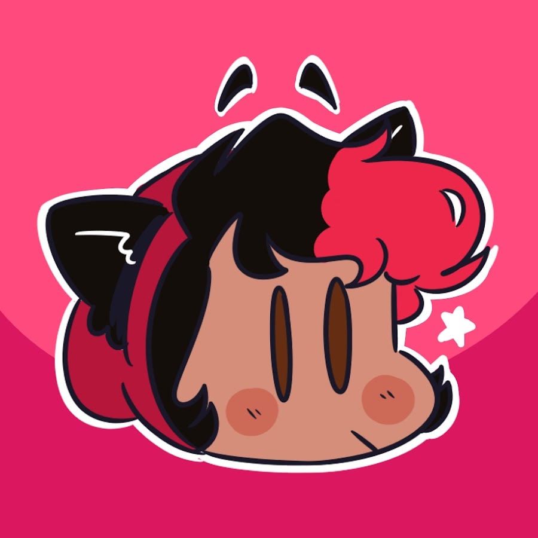

"Are You Satisfied?" II Henry Stickmin Animatic (Short)

PuppyRelp
Published on Jan 16, 2021
Comment
Stanley Parable
This is probably one of my favorite games of all time, mostly because it just makes me laugh so much. I'm not very good at
video games so combat isn't really my marker of what makes a game enjoyable for me, and though I do tend to be drawn in by the narratives
of games, it doesn't really need to be all that deep of a story to invest me. Really it ends up being that the characters are interesting
and their stories have potential even if it's never actually explored in a serious context. I think my love for The Henry Stickmin
Collection is the perfect example of that
Charles is my favorite character, due in large part to the fact that I recognize a lot of my experiences with ADHD in any scene he's in.
He's just such a silly and bubbly character but is also highly competent and one of the best in his field. I mean, I looked up the
mechanics and flying a helicopter is complicated, there's no way I could do that! There's something cool about a character's personality
not impacting their capabilities. I actually like Henry's character for a similar reason. I do find his backstory (or mysterious lack
thereof) interesting in terms of how he became a thief and the concept of how many different paths and moralities he's walked throughout
different timelines, but what I vibe with the most is the fandom's depiction of him as selectively mute. Sometimes my voice shuts down on
me when I get really overwhelmed so it's comforting to see a character still able to communicate and make connections even if they can't
talk. Henry's actually even the reason I've started to learn ASL
Stanley Parable
This is probably one of my favorite games of all time, mostly because it just makes me laugh so much. I'm not very good at video games so combat isn't really my marker of what makes a game enjoyable for me, and though I do tend to be drawn in by the narratives of games, it doesn't really need to be all that deep of a story to invest me. Really it ends up being that the characters are interesting and their stories have potential even if it's never actually explored in a serious context. I think my love for The Henry Stickmin Collection is the perfect example of that
Charles is my favorite character, due in large part to the fact that I recognize a lot of my experiences with ADHD in any scene he's in. He's just such a silly and bubbly character but is also highly competent and one of the best in his field. I mean, I looked up the mechanics and flying a helicopter is complicated, there's no way I could do that! There's something cool about a character's personality not impacting their capabilities. I actually like Henry's character for a similar reason. I do find his backstory (or mysterious lack thereof) interesting in terms of how he became a thief and the concept of how many different paths and moralities he's walked throughout different timelines, but what I vibe with the most is the fandom's depiction of him as selectively mute. Sometimes my voice shuts down on me when I get really overwhelmed so it's comforting to see a character still able to communicate and make connections even if they can't talk. Henry's actually even the reason I've started to learn ASL